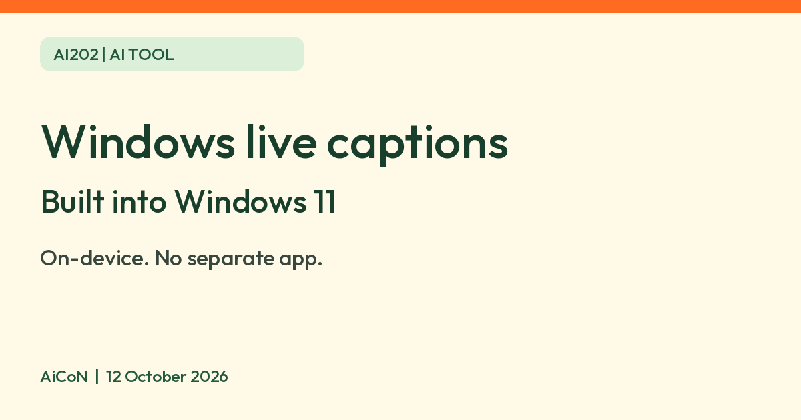

Windows 11 live captions: on-device captions for any audio, languages and limits
Microsoft says Windows 11 can caption any audio on your PC, with processing on the device. Translation to English needs a Copilot+ PC.

What it is
Live captions is a feature in Windows 11. Microsoft's support page says it turns audio that passes through your PC into captions on screen, in any app, for example a video, a call or a lecture. Microsoft says it is meant to help everyone, including people who are deaf or hard of hearing.
Does it cost extra?
It is built into Windows 11 (version 22H2 and later, per Microsoft). Microsoft's page lists no separate charge or sign-up for it. You do not install a separate app. You do need a PC running Windows 11, and the feature is not for Windows 10 or phones.
How it works
- Microsoft says all processing of audio and generation of captions happens on your device, and that audio, voice data and captions never leave your device and are not shared with Microsoft or the cloud. It says captions are not stored anywhere.
- Captions can work offline after the required language files are downloaded, according to Microsoft.
- The first time you turn it on, Windows asks for consent to process voice on the device and to download language files.
- The microphone is off by default. You can turn on "Include microphone audio" to caption your own speech or a talk in the room.
Languages
- Captions in the same language as the speech: Microsoft lists 21 speech recognition options, including English (India), English (United Kingdom) and English (United States), plus French, German, Spanish, Japanese, Korean and others. The list we read does not include Hindi or other Indian languages for speech recognition.
- Translation: Microsoft says translation is only on Copilot+ PCs running Windows 11 version 24H2 or later. Hindi is on its list of languages that can be translated into English there. The page also lists translation into Chinese (Simplified) from 27 languages, including Hindi. English output covers over 40 languages. Check that your PC is a Copilot+ PC before counting on this.
How to turn it on
- Press the Windows key + Ctrl + L, or open quick settings and switch on Live captions.
- Agree to the on-device voice processing prompt and download the language files if asked.
- In the captions window, open Settings to move the captions, change the style or switch language.
Limits to know
- Only detected speech is captioned. Applause or music is not detected, and sung lyrics are not reliably detected. "Any audio" means speech passing through the PC, not a transcript of every sound.
- Captions use the default sound output device. PC playback takes priority over microphone speech if both happen together, so it does not caption both speakers at once.
- Microsoft says apps that are heavy on resources, such as video sharing, can slow the captions or drop some.
- Microsoft says captions are generated with a compact on-device model, with "reasonable and acceptable accuracy". Do not rely on it for anything where a missed word matters.
- The support page does not say whether any feature is limited by country. We did not test it on a PC in India.
Frequently asked questions
Do I need internet?
Microsoft says captions can be provided when disconnected from the internet, after the language files are downloaded.
Does Microsoft hear my audio?
Microsoft says audio and captions never leave your device.
Does it caption Hindi speech?
Not in the speech list we read. Hindi appears as a translation source on Copilot+ PCs, for English and Chinese (Simplified) output, not in the same-language speech recognition list.
What changed since this post?
Microsoft support rechecked 12 October 2026. Confirmed Windows 11 22H2+, Copilot+ translation on 24H2+, 21 speech recognition options and English (India), with Hindi only on translation-source lists. Added Chinese (Simplified) translation, speech-only and playback-priority limits. Kept on-device/privacy claims attributed to Microsoft and the separate-charge wording cautious. No device, accuracy, offline or India test was performed.
Sources: Microsoft Support: Use live captions to better understand audio. Checked 12 October 2026.